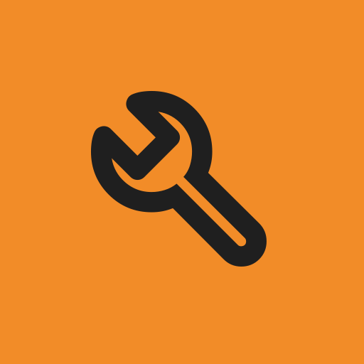

WarsztatownikWarsztatownik
Dziennik napraw dla mechanika samochodowego – aplikacja na Androida.
- Kartoteka aut i klientów z szybkim wyszukiwaniem (rejestracja, VIN, nazwisko, telefon)
- Zlecenia z częściami, robocizną i VAT, statusy prac
- Kosztorys i historia napraw w PDF
- Przypomnienia serwisowe po dacie i przebiegu
- Kopia zapasowa do pliku i na Dysk Google, blokada odciskiem palca
- Skaner numeru VIN i tablic rejestracyjnych, płatności i zaległości, SMS i WhatsApp do klienta
- Warsztatownik Pro: bez limitu aut, bez reklam, PDF z logo, statystyki
Wszystkie dane zostają w telefonie użytkownika. Bez analityki i śledzenia; wersja darmowa wyświetla jeden mały baner reklamowy.
Kontakt: perskawiecmichal@gmail.com